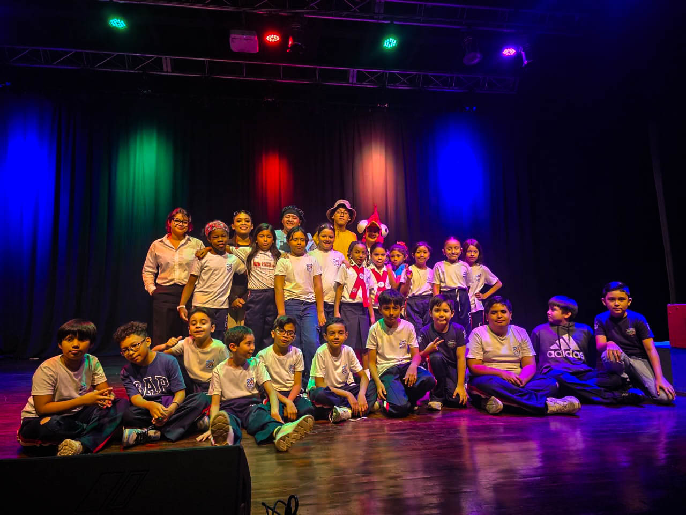
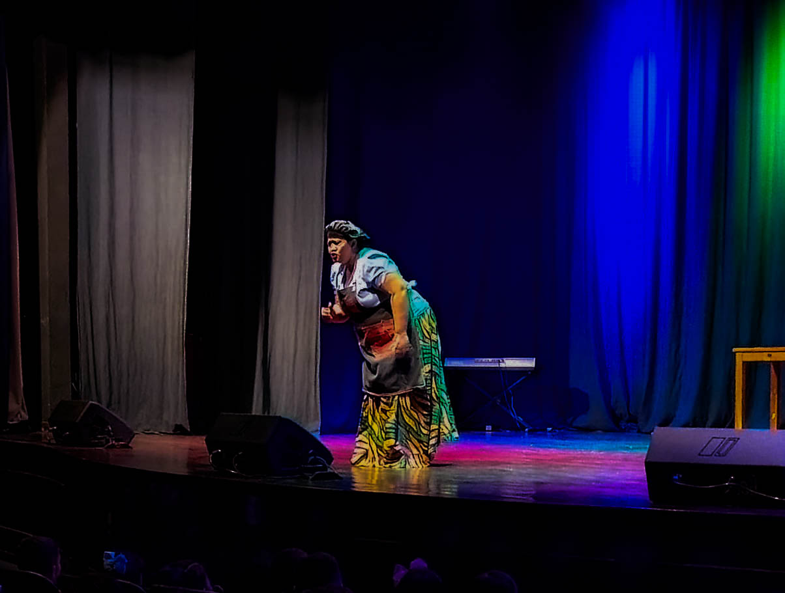
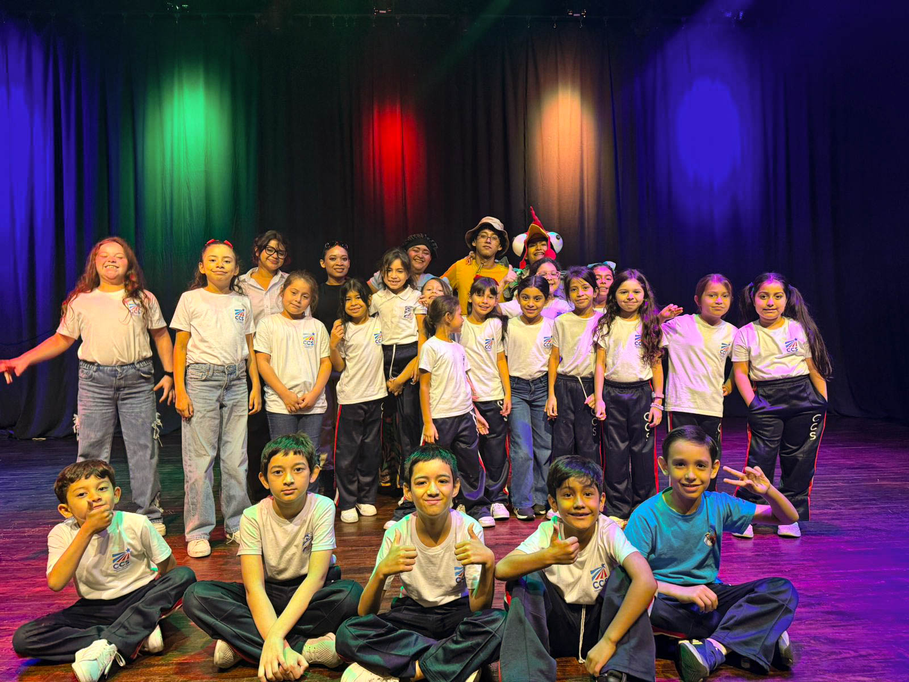
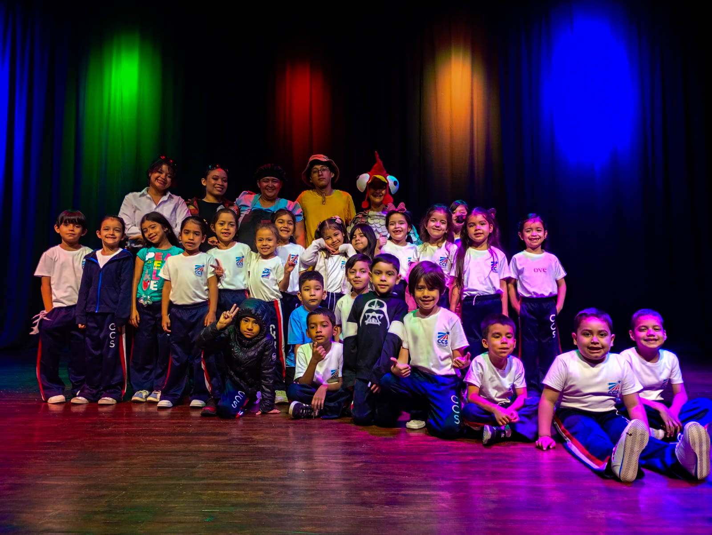
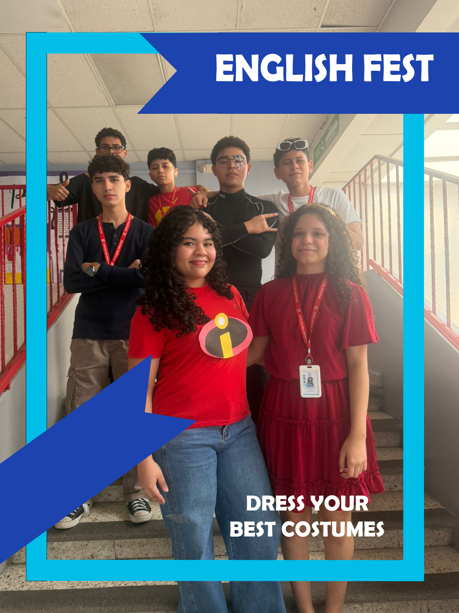
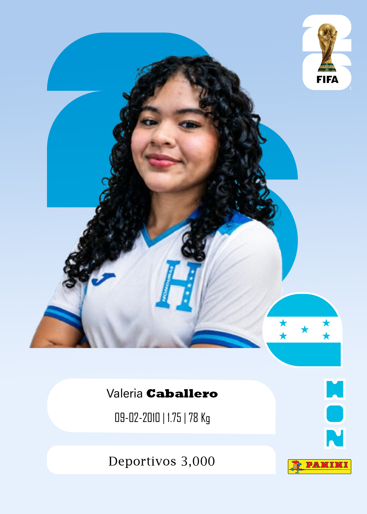
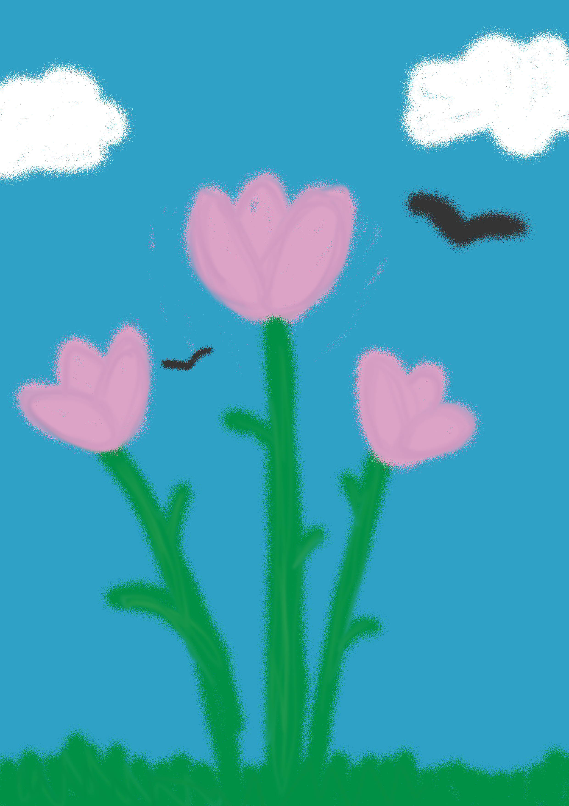
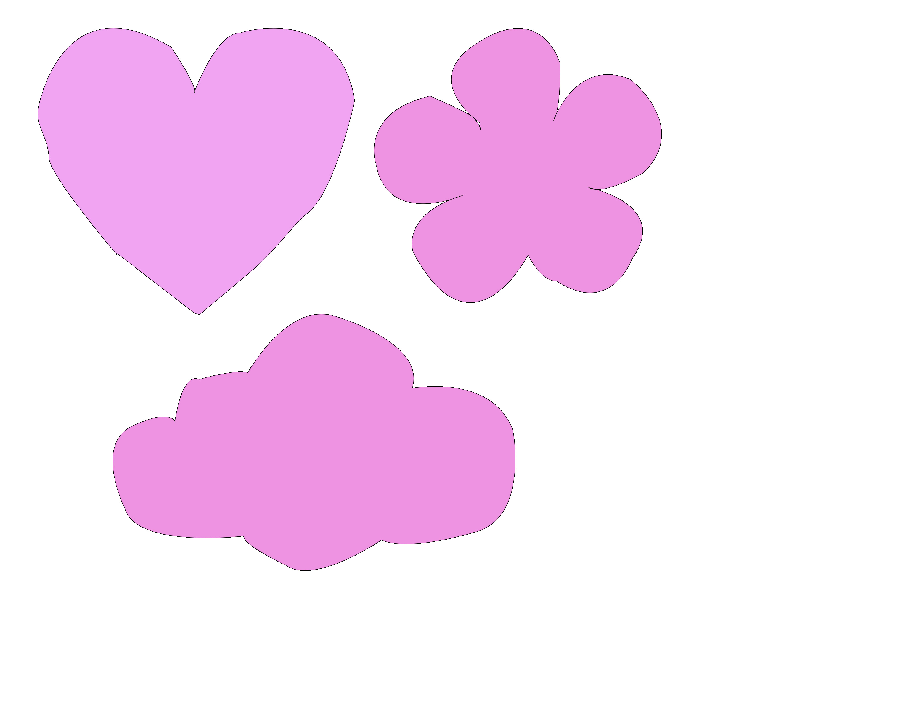
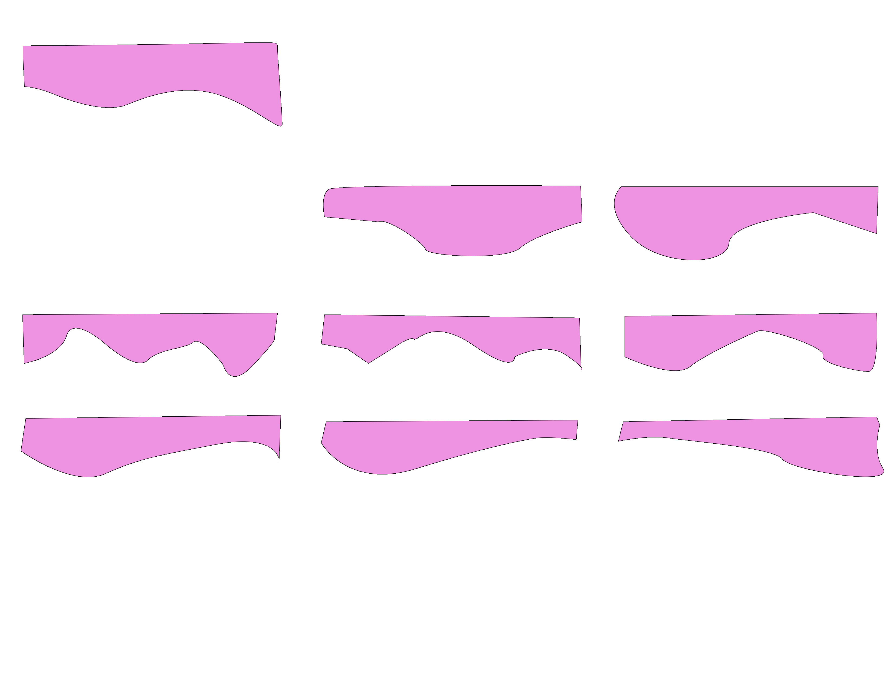
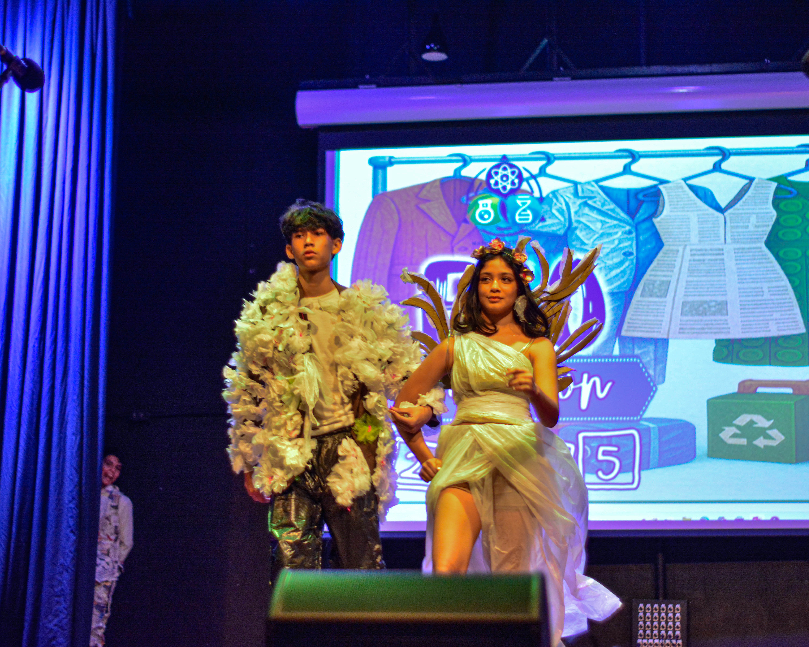

Galería de Proyectos
Haz clic en cualquier imagen para verla en pantalla completa.
01
Photoshop Vivian
Fotos 1 a 8

Foto 1

Foto 2

Foto 3

Foto 4

Foto 5

Foto 6

Foto 7

Foto 8
02
Edición Mágica
Fotos 9 a 13

Foto 9

Foto 10

Foto 11
Foto 12
Foto 13
03
Citizen
Foto 14

Foto 14
04
Fotos del Teatro
Fotos 15 a 19

Foto 15
Foto 16

Foto 17

Foto 18

Foto 19
05
Portada
Foto 20
Foto 20
06
Reels de Instagram
Fotos 21 a 23

Foto 21
Foto 22
Foto 23
07
Diseño Mundial
Foto 24

Foto 24
08
Dibujos de Photoshop
Fotos 25, 27 y 28

Foto 25

Foto 27

Foto 28
09
Portada de Fantasía
Foto 26
Foto 26
10
Proyectos Finales
Fotos 29 a 31

Foto 29
